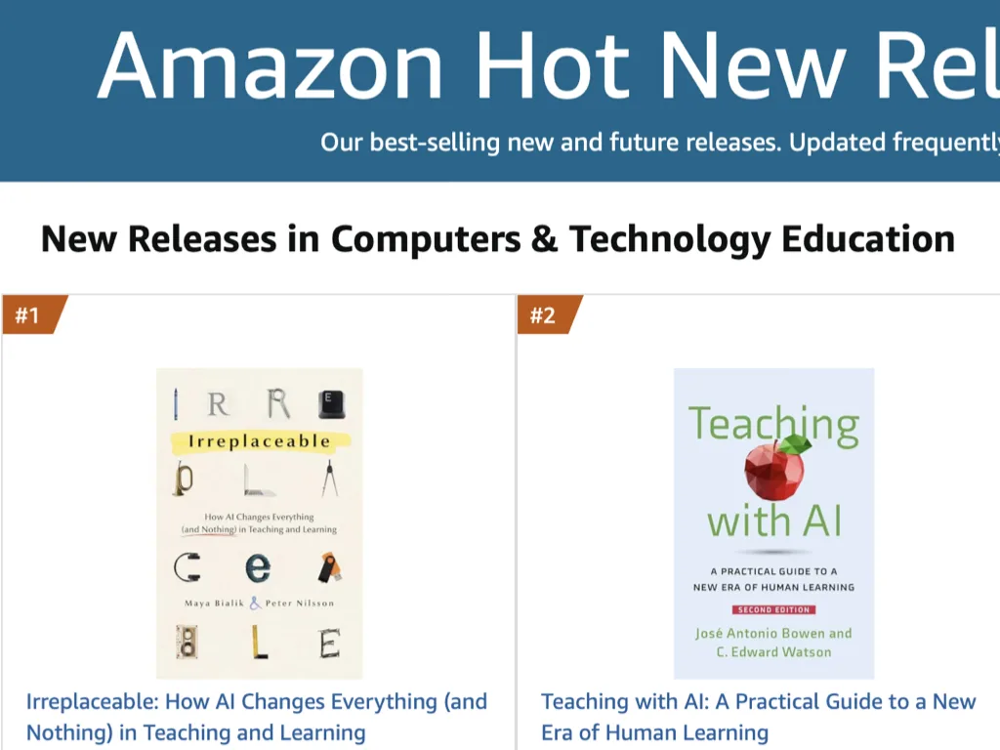
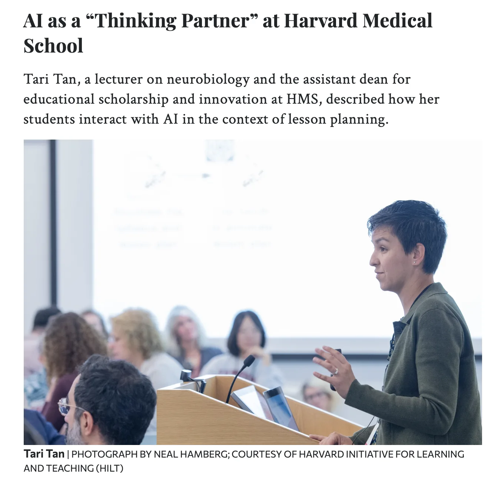

“Boys In The Digital Wild: Online Culture, Identity, and Well Being”
“Nearly three-quarters of adolescent boys regularly see "digital masculinity” content… Boys with heavy digital masculinity exposure have more negative self-esteem.”
A weekly collection of education-related news from around the web.
← Previous Issue · Next Issue →
An excellent week.
A year ago, when discussing emerging trends in education with a school board, we were happy to observe that the rate of women in leadership roles around the United States was growing. It hadn’t reached parity with men, but it was on its way. This showed promise for growing opportunities for girls, not just in schools, but everywhere. But it was at that moment that the board chair — a very accomplished woman — said, “This is all good, but I’m worried about the boys.” Since then, that concern has proven prescient. A growing number of reports have shown the decline of well-being, educational attainment, and more for boys. This week, check out Common Sense Media’s report in the features about boys’ experiences online, and what it means for their health.
Also in the features this week, find an excellent reflection by one teacher on the experience of designing a grading rubric with students. I’m seeing more and more of this kind of effort to rethink assessment with student voice in mind. Many, but not all, of these conversations have been driven by AI. (See the feature post in the AI section, for example.)
Also this week, a robust Leadership section, many posts in Reading/Writing, and some good humor throughout.
Last, I’m thrilled to share that Irreplaceable: How AI Changes Everything (and Nothing) in Teaching & Learningdebuted as the #1 New Release on Amazon in the Computers and Technology Education category. We’re so excited to share more about it in the weeks ahead.
These and more, enjoy!
Peter
PS. This week I’m in New York City for EdTech Week and NAMT. Drop me a line if you’re at either. It would be great to say hello!
October 20-22 – EdTech Week (NYC) October 23 – NAMT (NYC) January 11-14 – FETC (Orlando, FL) February 25-27 – NAIS (Seattle, WA) * March 9-12 – SXSW EDU (Austin, TX)

“Nearly three-quarters of adolescent boys regularly see "digital masculinity” content… Boys with heavy digital masculinity exposure have more negative self-esteem.”
“I’ll be honest. This collaborative grading model took more time and required more trust - from me and my students. I spent more time on feedback and I gave up complete control over grading. Students spent more time revising responses and reflecting on their learning. They also began to notice that the learning cycle didn’t work if they wouldn’t allow themselves to make mistakes. Those individual conversations with me encouraged them to (begin to) embrace that discomfort, and trust that I wasn’t trying to catch them out. Rather, I was trying to help them learn. Assessment therefore became a little more human, a little less transactional. And I noticed that talking with my students about assessment helped them develop more insight and motivation as learners.”
““It’s the characters,” Whitney added. “They’re hilarious.””
“Cease and desist… null and void… Why is law stuff like this always two words? ‘Breaking and entering’ ‘Breaking’ = English, ‘Entering’ = French’”
“In fast-paced, high-stakes transformation efforts, strategic metaphors aren’t fluff—they’re focused interventions that calm the brain, coordinate energy, and clarify direction. Robert Hill and Michael Levenhagen demonstrated that leaders coping with ambiguity must develop a mental model of how the environment works (i.e., “sensemaking”) and communicate this vision to gain support (i.e., “sensegiving”), with metaphor development serving as a critical stage in the process. Research confirms that metaphors reduce uncertainty about abstract concepts, with the effects particularly pronounced when ambiguity is high.”
“Writing, it turns out, is a difficult joy.”
“Beginning around the late 2000s and accelerating through the 2010s, a series of troubling trends emerged. Measures of well-being, including happiness and life satisfaction, began to show signs of strain. Youth mental health entered a state of crisis, with rates of depression, anxiety, and self-harm rising to unprecedented levels. Concurrently, metrics of cognitive performance and academic achievement, such as international test scores and measures of fluid intelligence, appeared to stagnate or decline after decades of progress. Labour productivity growth, a cornerstone of economic prosperity, slowed to a crawl… my hypothesis is that the introduction of the iPhone, and thus the modern mobile age is causing a huge impact on attention and is limiting life outcomes of millions around the globe. This is not an attempt to say these trends are monocausal - it is worth remembering that Correlation != Causation - but it is at the very minimum interesting that the charts seem to line up around 2007, and increase in magnitude of upward or downward slope as adoption of smartphones increase.”
As we enter the third full school year with AI, more and more teachers and professors are starting to experiment with AI in their classes. This week, find several posts that explore AI in teaching and learning, including both of this week’s features: one is about grading, and the other comes from Harvard’s Initiative for Learning and Teaching, which highlights how professors across the university are using AI in their classes.
Also this week, more stories about AI’s energy demands — and the follow on environmental impacts — are coming to light. While AI usage and utility is skyrocketing up and to the right, so are its energy needs — and these are only expected to grow. Increasingly, tech companies are becoming energy companies. But can they do it in a way that is sustainable? This must be a priority.
These and more, enjoy!
Peter

“Critically, Tan does not grade her students’ AI-generated content. Instead, she assesses their reflections and their ability to use AI meaningfully. Over time, students get better at writing effective prompts and critiquing the AI’s output. They learn to identify hallucinations, jargon that masks weak logic, and content that sounds plausible but lacks substance. Tan’s broader takeaway from the experiment is that AI won’t make teaching obsolete. It may, however, render disengaged or uncritical teaching practices obsolete.”
“So far, our teachers have told us that the report they find the most useful is the teacher report, consisting of personalised information on every student designed for teachers. There are three elements in the report: data, AI feedback and the student writing. They prefer this to the student report, which is similar but doesn’t have data and has simplified AI feedback. The most-requested feature from teachers has been an AI-generated year group summary of all this personalised feedback. We’ve developed that, and you can see an example of what it looks like here. It’s kind of like an examiner’s report, but just for your students.”